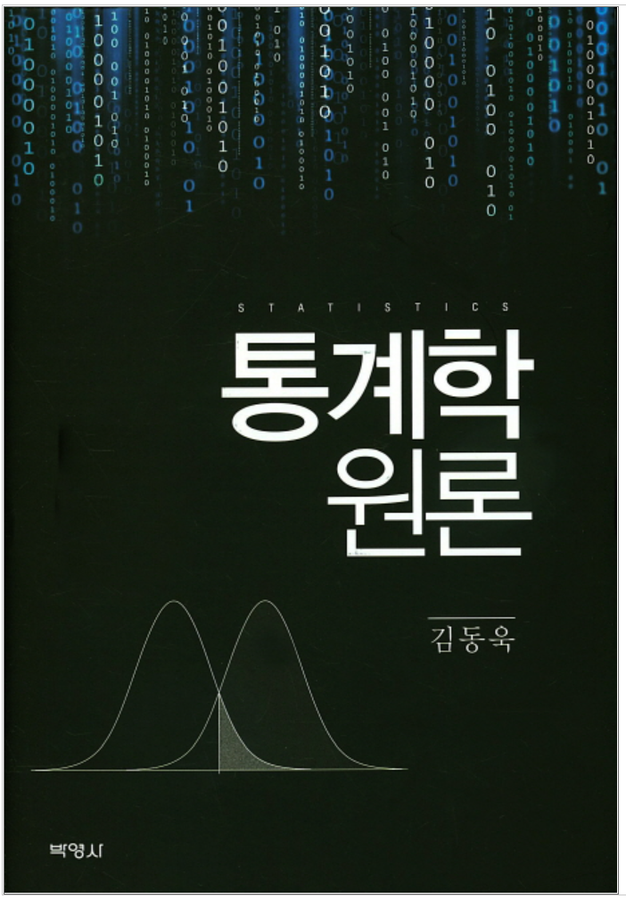

Introduction to Statistics
머리말
1
서론
1.1
통계학이란?
1.2
통계학의 실질적인 문제
1.3
모집단과 표본
2
자료의 기술
2.1
자료의 종류
2.1.1
범주형 자료
2.1.2
측정형 자료
2.2
위치의 측도
2.2.1
평균
2.2.2
중앙값
2.2.3
최빈값
2.2.4
평균, 중앙값, 최빈값 비교
2.2.5
백분위수
2.2.6
사분위수
2.3
산포의 측도
2.3.1
분산과 표준편차
2.3.2
범위와 사분위간 범위
2.3.3
변동계수
2.3.4
왜도와 첨도
2.4
자료의 시각적 해석
2.4.1
도수분포표
2.4.2
히스토그램
2.4.3
줄기-잎 그림
2.4.4
상자 그림
3
확 률
3.1
사상과 표본공간
3.1.1
사상과 표본공간
3.2
확 률
3.2.1
고전적 개념
3.2.2
상대도수적 개념
3.2.3
주관적 개념
3.2.4
확률의 공리
3.3
조건부 확률
3.4
사상의 독립
3.5
확률의 법칙
3.5.1
확률의 합법칙
3.5.2
확률의 곱법칙
3.6
베이즈 정리
4
확률변수
4.1
확률변수의 개념
4.2
이산형 확률분포와 연속형 확률분포
4.2.1
이산형 확률분포
4.2.2
연속형 확률분포
4.3
기대값과 분산
4.3.1
기대값
4.3.2
분산
4.3.3
체비셰프 부등식
4.3.4
선형결합으로 이루어진 확률변수의 평균과 분산
4.4
적률과 적률생성함수
5
확률분포
5.1
이산형 확률분포
5.1.1
이산형 균일분포
5.1.2
베르누이분포와 이항분포
5.1.3
다항분포
5.1.4
초기하분포
5.1.5
기하분포와 음이항분포
5.1.6
포아송분포
5.2
연속형 확률분포
5.2.1
연속형 균일분포
5.2.2
정규분포
5.2.3
이항분포와 포아송분포의 정규근사
5.2.4
지수분포와 감마분포
6
이변량 확률변수
6.1
결합분포와 주변분포
6.2
두 확률변수의 독립과 조건부분포
6.2.1
두 확률변수의 독립
6.2.2
두 확률변수의 조건부분포
6.3
기대값
6.3.1
공분산과 상관계수
6.3.2
조건부 기대값
6.4
두 확률변수의 선형결합
6.5
이변량 정규분포
7
표본분포
7.1
확률표본
7.2
표본평균의 표본분포
7.3
중심극한정리와 대수의 법칙
7.3.1
모집단이 정규분포를 따를 때
7.3.2
모집단이 정규분포를 따르지 않을 때
7.3.3
대수의 법칙
7.3.4
확률변수의 선형결합의 분포
7.4
정규분포에서 추출된 표본분포
7.4.1
표본평균
7.4.2
카이제곱분포
7.4.3
\(F\)
분포
7.4.4
\(t\)
분포
7.5
표본비율의 표본분포
8
점추정
8.1
점추정량
8.1.1
불편성
8.1.2
최소분산
8.1.3
8.1.2 최소분산
8.1.4
일치성
8.2
점추정방법
8.2.1
적률방법
8.2.2
최대우도방법
9
구간추정
9.1
신뢰구간
9.2
모평균의 구간추정
9.2.1
모분산
\(\sigma^2\)
을 아는 경우
9.2.2
모분산
\(\sigma^2\)
을 모르는 경우
9.3
모평균 차의 구간추정
9.3.1
독립적인 두 표본
9.3.2
대응표본
9.4
모비율의 구간추정
9.5
모비율 차의 구간추정
9.6
모분산의 구간추정
9.7
허용오차 및 표본크기의 결정
10
가설검정
10.1
가설검정의 이론
10.1.1
통계적 가설과 검정통계량
10.1.2
제1종 오류와 제2종 오류
10.1.3
검정력
10.1.4
임계값
10.1.5
가설검정의 절차
10.1.6
\(P\)
-값의 이용
10.1.7
구간추정과 가설검정의 관계
10.1.8
구간추정과 가설검정의 관계
10.2
단일모평균의 검정
10.2.1
모분산을 알 경우
10.2.2
모분산을 모를 경우
10.3
두 모평균 차의 검정
10.3.1
독립적인 두 표본의 경우
10.3.2
대응표본
10.4
단일 모비율의 검정
10.5
두 모비율 차의 검정
10.6
단일 모분산의 검정
10.7
두 모분산 비의 검정
Published with bookdown
Introduction to Statistics
Introduction to Statistics
Jin Hyun Nam
2022-09-03
머리말
This is a Introduction to Statistics.
< 목 차 >
서론
자료의 기술
확률
확률변수
확률분포
이변량 확률변수
표본분포
점추정
구간추정
가설검정
